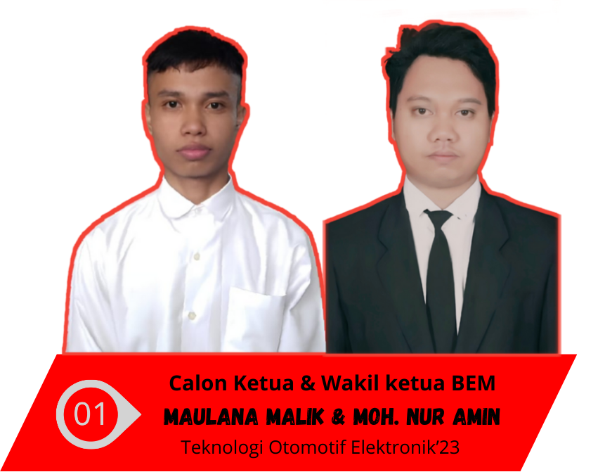
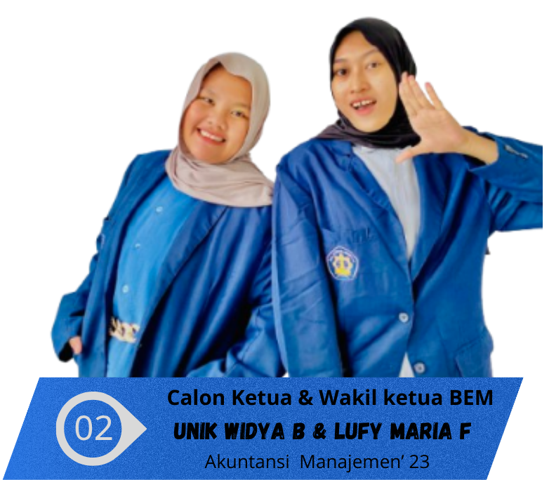

CALON KETUA & WAKIL KETUA BEM
01

MALLANA MALIK
Ketua BEM
MOH. NUR AMIN
Wakil Ketua BEM
Teknologi Otomotif Elektronik '23
VISI & MISI
Visi:
Menjadikan BEM sebagai wadah aspirasi mahasiswa yang progresif dan inovatif
Misi:
- Meningkatkan kualitas pelayanan kepada mahasiswa
- Membangun sinergi dengan seluruh elemen kampus
- Mengembangkan program kerja yang bermanfaat
- Memperkuat jaringan dengan BEM lainnya
- Menciptakan lingkungan kampus yang inklusif
👆 Ketuk kartu untuk melihat Visi & Misi
02

UNIK WIDYA B
Ketua BEM
LUFY MARIA F
Wakil Ketua BEM
Akuntansi Manajemen '23
VISI & MISI
Visi:
Mewujudkan BEM yang aktif, terbuka dan sebagai aspirasif dan solutif yang menaungi seluruh mahasiswa PSDKU Pamekasan secara kolaboratif guna mengembangkan potensi mahasiswa.
Misi:
- Membangun lingkungan kerja BEM yang profesional dan solid.
- Meningktkan pelayanan dan respon terhadap kebutuhan mahasiswa.
- Meningkatkan sistem kerja dan Manajemen internal BEM.
- Menyediakan ruang aspirasi yang inklusif dan solutif.